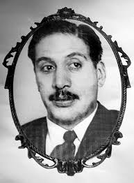
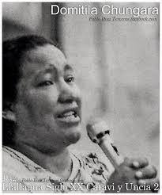
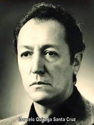
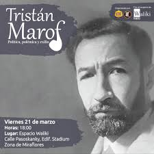
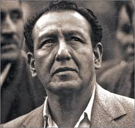
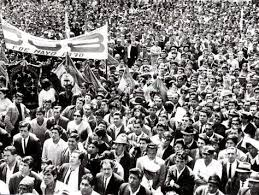

Juan Lechín Oquendo fue un destacado líder sindical y secretario general de la Federación Sindical de Trabajadores Mineros de Bolivia.

Domitila Barrios de Chungara fue una destacada líder boliviana. De familia humilde, dio numerosos testimonios acerca del sufrimiento que tenían los mineros de su país. Es conocida por su lucha pacífica contra las dictaduras de René Barrientos Ortuño y de Hugo Banzer Suárez.

Marcelo Quiroga Santa Cruz fue un político, líder socialista, escritor y docente
universitario boliviano.
Político e intelectual comprometido con la justicia social y la democracia.

Gustavo Adolfo Navarro Ameller fue un escritor, político y diplomático boliviano, más
conocido por el seudónimo de Tristán Marof.
Pensador boliviano que reflexionó sobre la realidad social y laboral del país.

Líder minero que mantuvo la resistencia sindical durante las dictaduras militares de los años 70 y 80.

En 1907, organizaron la primera marcha significativa en las calles de La Paz, consolidando la fecha en el calendario civil boliviano.